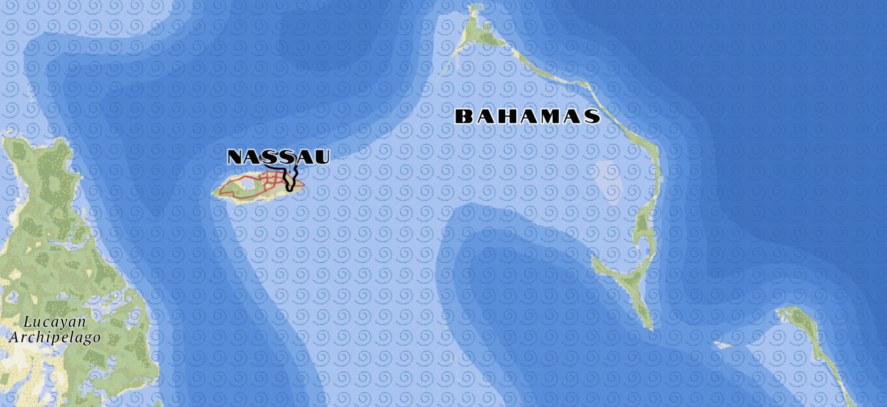
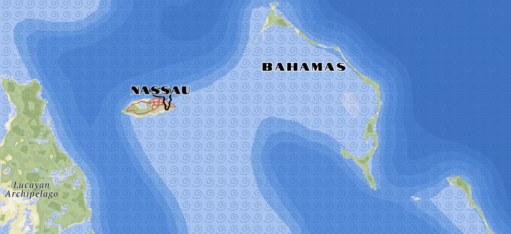
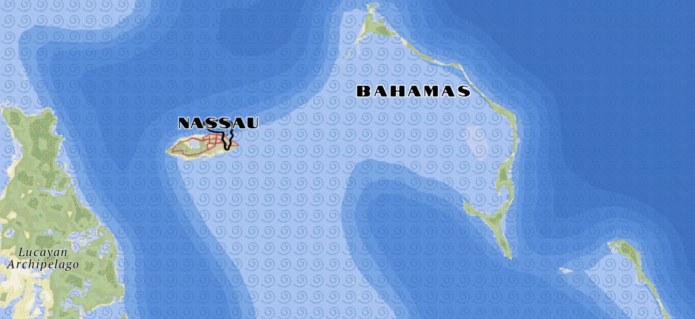
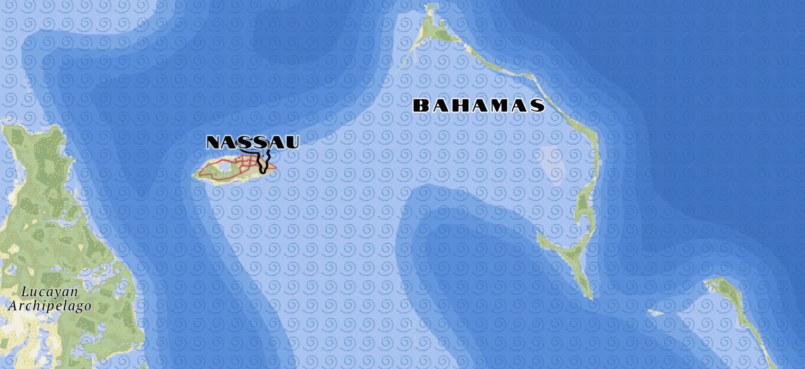

Surrealism Map
For the third lab in GEOG 572, we were tasked with creating a custom tileset using Mapbox. For my tileset, I drew inspiration from a 1930s topographical map of Switzerland. I aimed to blend elements of the Surrealism art movement from that era, incorporating larger-than-life and exaggerated features into the topographical map.
The map draws inspiration from the exaggerated nature of the surrealist art style, which seeks to express the unconscious mind through dream-like imagery. Surrealism is renowned for distorting the real world, and I aim to reflect this through the map's topology. I maintain a natural color palette, in keeping with the surrealist aesthetic, while incorporating elements of a topographical map, such as contour lines and speckled shadows, to enhance contrast. This approach creates a bridge between the flatness of a topographical map and the intense shadows typical of surrealism, emulating a sense of realism within the surreal.
I aim to pay homage to Salvador Dalí, one of the most renowned surrealist artists of his time, by incorporating elements from his iconic work The Persistence of Memory. The melting clocks serve as symbols for the larger city labels, while Dalí's signature mustache is used to represent the smaller cities.
In considering how to exaggerate a typically flat topographical map, increasing the elevation of the terrain seemed like the most effective approach. I used Mapbox Terrain DEM to create strong shadows and highlights, ensuring the exaggeration appeared natural. I also created a layer of speckle with the elements in the hillshade layer to enhance the shadows and emulate the same technique in the Switzerland topographical map I was inspired by.
 


 

The Himalayas mountain range in Asia look like this, with the exagerated topographical elements.
Large cities, like Chicaco Illinois, looks like this.
Colorado Springs shows both the topographical elements along with the elements incorporated in the urban land scape.
Finally, look at an island to emphasize the blue water that came from the inspiration art. Very blue close to the shower but quickly turning to a deep blue.
Map at differnt zoom levels.
See full map here.
Credits:
Map created with Mapbox Studio
Data from openstreetmap